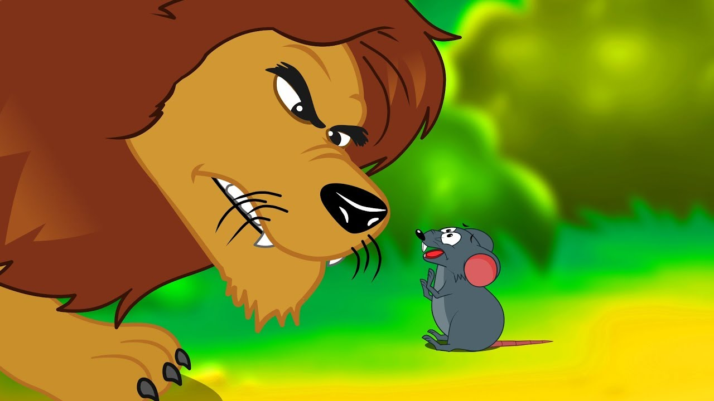

Um leão cansado de tanto caçar, dormia espichado á sombra de uma boa árovre .Viram uns ratinhos passear em cima dele e ele acordou ele ira decidir
Todos conseguem fugir menos um o que o leão fará.
O leão o prendeu debaixo da pata. tanto o ratinho pediu e implorou que o leão desistiu de esmaga-lo
Algum tempo depois, o leãoficou preso na rede de uns caçadores. não conseguia se soltar, e fazia a floresta inteira tremer com seus urros de raiva .

Nisso apareceu o ratinho com seus dentes afiados que podem o soltar
o ratinho fica pensativo sobre ajudar ou não
Com seus dentes afiados, roeu a corda e soltou o leão
Uma boa ação ganha outra